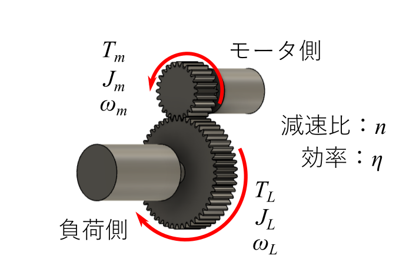

モータと減速機の選定方法
モータ・減速機の選定手順
モータと減速機の選定手順を記します．以下の順番で選定を行います．(1) モータの仮選定．
(2) 減速機の仮選定．
(3) (1)(2)で仮選定したモータ及び減速機を用いて，出力を再計算．
(4) (3)で求めた出力(モータの発生トルク)が選定したモータの使用可能領域内に入っているかを確認．
(5) (4)で使用可能領域に入っていれば，選定終了．入っていなければ，(2)より，減速機の選定のやり直し．以下繰り返す．
フローチャート図にまとめると次のようになります．
モータの仮選定

まず始めにモータに必要な出力を求めます．
右図に示すように減速機を介してモータで負荷を駆動する場合を考えます．
モータのロータ回転速度\(\omega_m\) [rad/s]，モータの発生トルク\(T_m\) [Nm]，モータのロータイナーシャ\(J_m\) [kgm2]，
負荷のの回転速度\(\omega_L\) [rad/s]，負荷トルク\(T_L\) [Nm]，負荷イナーシャ\(J_m\) [kgm2]，
減速機の減速比\(n\) [-]，効率\(\eta\) [-]とします．※ 減速機のイナーシャは無視しています．
モータのロータ回転速度と負荷の回転速度の関係は以下のようになります．
$$ \omega_m = n\omega_L \tag{1}$$
また，モータに作用する負荷からのトルクを\(T_{L,m}\)[Nm]，負荷に作用するモータからのトルク\(T_{m,L}\)[Nm]とすると，モータと負荷の回転の運動方程式は
以下のようになります．
\begin{align}
J_m\dot{\omega}_m &= T_m - T_{L,m} \tag{2}\\
J_L\dot{\omega}_L &= T_{m,L} - T_L \tag{3}
\end{align}
\(T_{L,m}\)，\(T_{m,L}\)の関係は，減速機の効率を考慮すると以下のようになります．
$$ T_{m,L} = \eta nT_{L,m} \tag{4}$$
(2)(3)(4)式より\(T_m\) を求めると，以下のようになります．料理番組みたいですね．
$$ T_{m} = \frac{T_L + (J_L + \eta n^2 J_m)\dot{\omega}_L}{\eta n} \tag{5} $$
モータに必要な出力\(P_m\) [W]は\(T_m\) と\(\omega_m\) の積で求まり，上式の\(T_m\) を代入すると，
$$ P_m = T_m \omega_m = \frac{T_L + (J_L + \eta n^2 J_m)\dot{\omega}_L}{\eta n} \omega_L \tag{6} $$
となります．
負荷（モータ）の回転速度は，一定ではなく，時間によって変化させるように制御するものとします．
すると，\(P_m\) も時間によって変化します．
変化する\(P_m\) の最大値\(P_\rm{max}\) よりも大きい定格出力を有するモータを選定する必要があるのですが，
この段階では減速機の選定を行っていないため，減速比\(n\)，効率\(\eta\) は分かりません．よって，\(P_\rm{max}\) は定めようがないです．
そこで，仮の値（例えば，\(n = 1\)，\(\eta = 0.8\)）をそれぞれ代入し，\(P_\rm{max}\) を求め，モータを選定（仮）します．
また，\(J_m = 0\) としてモータのロータイナーシャを無視する方法もあります．
減速機の仮選定
減速機の選定は，まずは前項で選定したモータを使用した場合，負荷の駆動に必要な減速比\(n\) の条件を求めます．そして，その条件を満たす， 減速比を有していることと，減速機カタログ値の定格トルクが，最大負荷トルクより大きいもの，連続運転可能な回転速度が，負荷の最大回転速度よりも大きいものを選定することになります． 前項の最後で述べた，\(J_m\) を無視する方法で，モータが発生するべきトルクの最大値を(3)式を用いて求めると，以下のようになります. $$ \frac{T_{L,\rm{max}}}{\eta n} = \frac{\rm{max}(T_L + J_L\dot\omega_L)}{\eta n} \tag{7} $$ 減速比\(n\) を決めるためには，以下の2つの条件を満たす必要があります．(1) 上式により求まる値は，選定したモータの最大出力トルク\(T_{\rm{max}}\) より小さい必要があります．
(2) 2つめの条件は，負荷の最大回転速度\(\omega_{L,\rm{max}}\) は，選定したモータのロータ最大回転速度\(\omega_{\rm{max}}\) より小さい必要があります．
以上の2つの条件を以下のようにまとめます． \begin{align} \frac{T_{L,\rm{max}}}{\eta n} &< T_{\rm{max}} \tag{8} \\ n\omega_{L,\rm{max}} &< \omega_{\rm{max}} \tag{9} \\ \end{align} $$ \frac{T_{L,\rm{max}}}{\eta T_{\rm{max}}} < n < \frac{\omega_{\rm{max}}}{\omega_{L,\rm{max}}} \tag{10} $$ (10)式を満たすような減速比\(n\) を有し， 冒頭で述べた通り，その減速機カタログ記載の定格トルク，連続運転可能な回転速度が， 負荷の最大負荷トルク，最大回転速度よりも大きい減速機を選定します．ここで，その減速機の効率\(\eta\) も調べておきます．